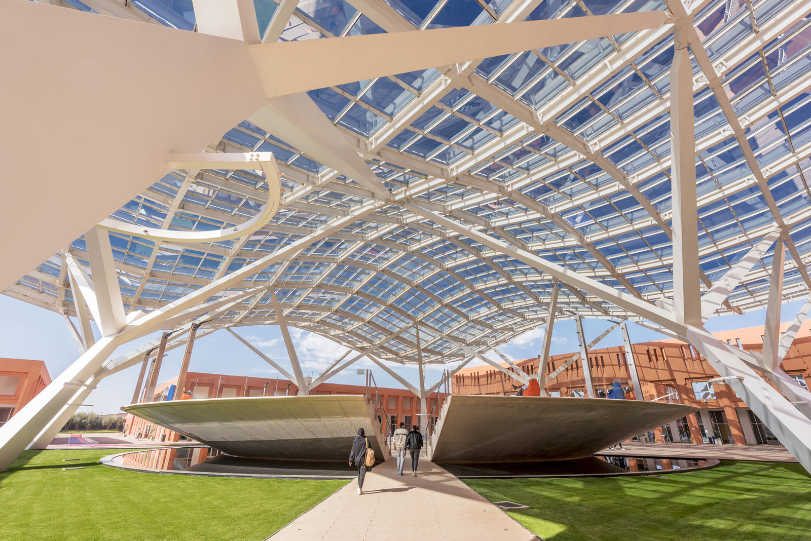
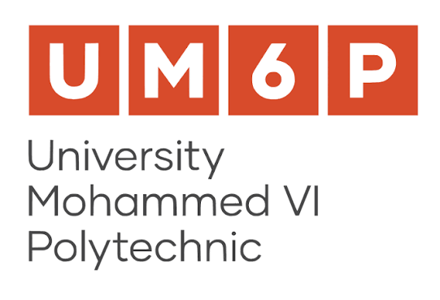

Depuis 2025
Master Bâtiments Verts et Efficacité Énergétique (Green BEEE)
Université Mohammed VI Polytechnique
School of Architecture, Planning and Design · Benguerir, Maroc
Bâtiments durables, simulation énergétique, confort intérieur et systèmes énergétiques.